FMOD Studio User Manual 1.10
- Welcome to FMOD Studio
- FMOD Studio Concepts
- Organizing the Project
- Authoring Events
- Working with Instruments
- Managing Assets
- Getting Events into Your Game
- Mixing
- Profiling
- Editing During Live Update
- Supporting Downloadable and User-generated Content
- Advanced Topics
- Event Macro Controls Reference
- Plug-in Reference
- Modulator Reference
- Built-In Parameters Reference
- Scripting
- Scripting API Reference
- Keyboard Shortcut Reference
- Glossary
- Appendix: Celeste Getting Started Guide
8. Mixing
It is important to make sure events in your FMOD Studio project all sit nicely together in terms of volume and the audio spectrum. This is where the FMOD Studio mixer comes into play; in it you can adjust the volume levels on groups of events, as well as creating custom mixer views and snapshots.
You can also create return buses for events to share effects and save resources on placing these effects on every event needed.
The mixer window contains tools and features that allow you to set up routing and mix your project, to apply effects to its signal chains, and to define how those effects and that mix can change in response to game events.
In addition, all of these features can be used while connected in real time to your game as it runs.
By default, all events created in your project are routed directly to your project's master bus. The mixer window allows you to supplement your events with group buses and return buses. These buses can then be routed into group buses, and their signal chains can be populated with sends to return buses and effects modules. These features resemble those of hardware mixers.
You can also create snapshots. When active, a snapshot alters the value of any effect property or bus volume scoped into it. Volumes and properties not scoped in to a snapshot are left unchanged, meaning that multiple snapshots can be active at once without overriding each other if they apply to different parts of the project.
8.1 Anatomy of the Mixer
The mixer window is broken up into three main areas:

8.1.1 The Mixer Browser
Located at the left-hand side of the window, the mixer browser is used for routing signal path information in the mixer.
Routing Tab
Each event in your project appears in the routing browser, with the exception of nested events. By default these are all routed directly to the master bus for playback output.
Return buses are labeled with a blue "Return" icon, group buses are labeled with a gray "Groups" icon, and events are labeled with the event icon.
To create more buses, right click on an empty space and select "Create Return" or "Create Group" from the context menu.
To route events, buses, and groups, drag them onto other group buses. The top level group bus is a submix of the buses below it, which may have submixes of child group buses and so on.

You can also change the routing of groups and returns using the mixer routing window.
For more information, please see the sends and return buses and group buses and routing sections.
VCAs Tab
VCAs are for controlling the volumes of disparate buses that do not share routing.
To create new VCAs, right click in an empty space of the VCAs browser and select "New VCA" from the context menu. To assign group buses, return buses, and other VCAs, drag and drop them from the events browser to the VCA, or right click on the desired bus and select "Assign To VCA" and then your VCA.
For more information, please see the VCA section.
Snapshots Tab
A snapshot is an instanceable unit of changes to the project mix that can be triggered, controlled, and stopped from game code. Each snapshot represents a different way your game's mix can change in response to the circumstances in your game as it runs.
To create an overriding or blending snapshot, right click on an empty space and select "New Overriding Snapshot" or "New Blending Snapshot".
For more information, please see the snapshots and the tracks view section.
8.1.2 Mixing Desk
The main section of the mixer window is the mixing desk. This is a simple visual representation of a selection of buses. Buses are displayed as vertical strips (called "channel strips") to the left of the master bus.
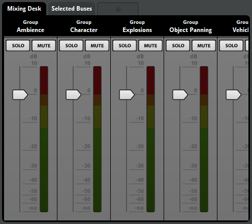
8.1.3 Mixer View
You can create a custom view of mixer objects for your convenience. Although mixer views do not affect the in-game behavior of their contents, they can be a handy tool when working in larger projects to easily find and view specific objects or groups of objects.
To add a bus to a custom mixer view, either drag the bus into the mixing deck, or right click on the bus, select "Assign to Mixer View", and then your mixer view.
Any group bus, return bus, or VCA can be added to a mixer view.
As an example, you can set up a specific mixer view that contains all of a project's character sounds, another for enemy sounds, and a third one for environmental sounds. Right clicking on a created tab lets you create or remove a mixer view.
To open a mixer view in a new window, right click on the mixer view's tab and select "Open in a New Window".
Double click on a mixer view tab to rename it.
8.1.4 Selected Buses Tab
In a larger project with many buses, you may want to view only a specific selection of buses. You can do this by selecting all of the desired objects in the mixer browser and then clicking the "Selected Buses" tab. You can select and deselect different buses as desired.
8.1.5 The Deck
The deck displays the controls of the selected bus.
8.1.6 Master Bus
The master bus is the final bus before the sound is sent to the output device. All sounds in FMOD Studio eventually pass through the master bus.
8.2 Group Buses and Routing
FMOD Studio populates the mixer browser with all events that exist in a project, other than nested events. By default, these events are all routed directly to the master bus for playback output.
If a project requires a further level of control over the output behavior of the signal paths then they can be assigned to specific groups within the mixer view; these groups are called group buses.
A group bus mixes the output of multiple events and buses together, allowing you to apply effects and routing behavior to all the signals within a group.
Any event that is not nested and does not route into a group bus instead routes into the master bus. Each event must route into exactly one group bus or master bus.
To create a group bus, right click in an empty space in the mixer routing browser and choose "New Group" from the context menu.
8.2.1 Master Bus
The master bus creates the final submix of all buses routed to it before outputting audio to the speaker channels. All group buses, return buses, and events not assigned to a group are routed into the master bus.
The master bus combines all buses, allowing for final level adjustments and simpler mastering. The master bus delivers the combined output to the hardware, in the format specified by the project for the given platform.
8.2.2 Bus Instance Limiting
There may be times in your game where there are a lot of events from the same group bus playing at once. It is possible to limit the number of event instances being passed through a group bus.
For example, your game has footstep sound events assigned to soldiers and there is an army on screen. Rather than each of the army's 100 or more soldiers all playing footsteps at once, it would be better for performance and audibility of other events to limit the number of footstep event instances.
When a group bus is selected, there is a "Group Macros" section on the far right of the deck.
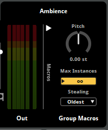
The max instances property sets an upper limit on how many instances of events routed to this bus can play simultaneously. By default, it is set to allow infinite simultaneous instances.
If your game's code attempts to create a new instance of an event that would exceed the value of the max instances property set, FMOD Studio culls or virtualizes event instances according to the event's "stealing" macro control.
The stealing property determines how FMOD Studio behaves when your game's code attempts to create a new instance of the event, and the number of instances of that event is already equal to the event's max instances property. The various stealing behaviors are as follows:
- Oldest: The oldest instance of the event is immediately stopped and replaced by the new instance.
- Quietest: The quietest existing instance of the event is immediately stopped and replaced by the new instance. An event instance's 'Quietness' is derived from the volume of the mixer hierarchy, the event's master track volume, and the gain applied to the event by its spatializer effect. The volume settings of the event's audio tracks, nested events, and playing instruments are not taken into account.
- Virtualize: All new event instances are created and behave normally, but instances in excess of the event's max instances property are not routed to the project mixer and so produce no audible output. Only the quietest instances of an event are made virtual. If a virtualized event instance ever becomes louder than a non-virtual event instance, FMOD Studio automatically makes the quieter instance virtual and begins routing the louder instance into the mixer. Virtualized event instances are also made audible if the number of event instances drops below the event's max instances property.
- Off: New event instances are not created when the number of concurrent instances is already equal to the max instances.
Virtual voices will still consume resources even if they are not included in the mix.
8.2.3 Mixer Routing Window
The mixer routing window displays the routing browser and VCAs tab which are also found in the mixer window.
8.2.4 Submixes
A submix is the sound produced in a bus which is the sum of all tracks and return tracks before it reaches the master bus. All changes made to a submix will affect the sound being routed out, whether it is to another bus or the master bus.
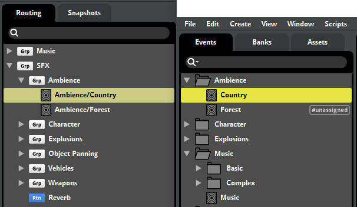
In the above screenshot, the Country event is a submix of all the tracks in the event, the Ambience group bus is a submix of the Country and Forest events, and the SFX group bus is a submix of all the return and group buses (and their events) underneath.
8.3 Sends and Return Buses
If you are using a specific effect chain in multiple events or tracks in FMOD Studio, it may be more effective in both workflow and performance to use sends with a return bus. You can also use group buses in a similar way, however a return bus can provide more flexibility.
8.3.1 Sends
A send duplicates audio signals from the point it exists in the signal chain of a track and sends it to a return track or return bus it is pointing to. The audio being sent is affected by all changes made to the audio before it reaches the send. A send only has a volume control which affects the level of the duplicated signal.

The above screenshot shows the send to the "Reverb" return bus located to the right of the volume fader.
You can adjust the volume being sent to a return bus by adjusting the "Volume" dial on the send.
For sends to a return bus in the mixer, you can open the target return in a mixer window by selecting "Open Target in Mixer" from the context menu.
Sends may be rerouted to send their signal to a different return bus. To reroute a send, right-click on the send and select a return bus from the "Reroute" sub-menu in the context menu.
8.3.2 Returns
A return bus is a special type of bus. It does not allow events or group buses to route into it. Instead you can only send duplicate signals into return buses via a send. This bus then makes a submix of all of these sends and outputs to whichever bus it is routed to. By default, all returns are routed to the master bus.
It is best practice to have all "Dry" properties in effects set to -∞dB and all "Wet" properties to 0dB. This is to ensure that the return bus is only outputting the effect properties on the duplicated signal.
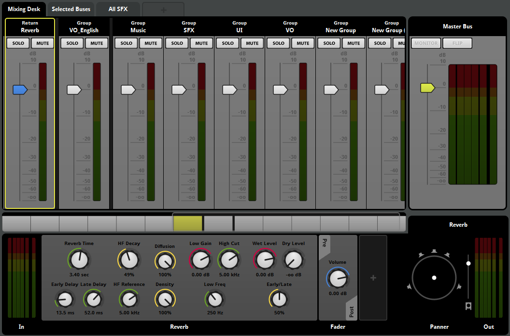
All new FMOD Studio projects have a "Reverb" return bus included.
You can use group buses to a similar effect but a return bus offers much more flexibility. Sends to return buses have a volume control, which alters the volume of the duplicate signal without affecting the original to specific points in an event's signal chain. You can place a send in a variety of places such as the master track of an event, on a specific track or tracks, and even pre-volume fader.
8.4 Bus Volumes
The main component on each bus is the volume fader. These control how loud the submix output is. When a volume fader is set to 0dB, there has been no alteration made to the output.
To bulk edit bus volumes from the mixing desk, make a multi selection by holding either 'Shift' or 'Ctrl' and click on buses either in the mixing desk or the routing browser. Once you've made your selection, release the 'Shift' or 'Ctrl' keys. Moving one of the volume faders in the mixing desk will move all the selected buses as well.
By default, bulk editing volumes will make all volumes the same level. By holding onto the 'Shift' key whilst dragging the faders, you can relatively bulk edit volumes; reducing the volume by -2dB will reduce the volume of all selected buses by 2dB.
8.5 VCAs
VCAs are a way of grouping buses for the purposes of volume control.
VCAs provide a further level of volume control designed to allow a selection of buses to be volume adjusted relatively across the selection. They exist in parallel with the normal signal chain.
You can view the VCAs browser in the mixer window in the VCA tab.
To create a new VCA, right click on an empty space and select "New VCA". When a VCA is selected, you can see it in the mixing desk and includes the standard channel strip volume fader, solo and mute controls.
Within the VCA browser there is a flat hierarchy - all VCAs exist on the same level - which is not part of the routing chain; they exist alongside it.
Events, group buses, and return buses can all be assigned to VCAs. Signals are not routed through VCAs but are assigned as parallel controls of the main signal chain.
To assign something to a VCA, you can either drag that bus or event onto the VCA from a different window, or you can right click on that bus in the "Routing" tab and choose "Assign to VCA..." from the context menu.
Because VCAs exist outside of the signal chain they allow for buses to be grouped together in any way. Within a VCA there is no relationship other than the VCA group so buses from different group buses, returns, and events can all be grouped and controlled without fear of interfering with their routing pathways.
VCAs can be useful for general project balancing and level mixing as they provide a quick way of grouping and adjusting events without affecting the signal chain in any way. The most common use situation for VCAs is as master controls within a game's user settings. Sound Effects, Dialogue and Music are excellent examples of typical VCA grouping in a game project.
8.6 Soloing and Muting Buses
To solo or mute a bus, click on the "Solo" or "Mute" buttons located on the bus strip.
This is a very useful feature for when you want to make sure a group bus submix is leveling out nicely, or to make sure a return bus has the right amount of an effect mixed in.
Muting a bus will silence that bus. Any sends placed on that bus before the pre-fader (ie. in any child group bus or event, or placed on the bus signal chain before the pre-fader volume control) will not be silenced because the signal was duplicated and sent to another bus.
Soloing a bus mutes all other buses, with the exception of the master bus and any bus that is routed into it. If a return bus is set to solo, the buses it is receiving audio signals from are not muted. However, setting a group bus that has a send on it to solo will mute all returns regardless of if that bus is sending a signal to it or not.
8.7 Signal Chains and Effects
A signal chain is a representation of the processing undergone by a signal as it passes through a bus or track. When you select a track or a bus, the signal chain is displayed in the deck.
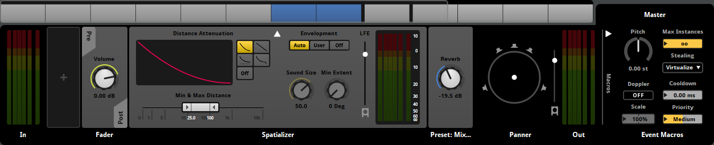
The signal chain flows from left to right in the deck. An effect alters the audio passing through it and passes the audio down the chain. After the last effect the signal will route out to whichever bus it is routed to. Those buses may also have their own effects and signal chains to consider.
Please see the group buses and routing section for more information.
Effects are modular units that alter the audio signal passed through them in real-time. It is always important to take the signal chain into consideration when adding effects. For example, look at the follow signal chain:
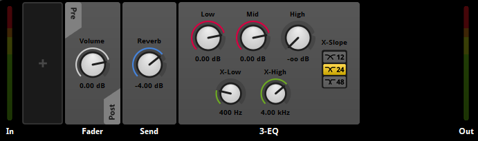
In the above example, the audio signal is coming into the left end of the deck. There is no effects in the pre-fader so it passes through the track's volume fader and out to post-fader.
The signal is first being duplicated and sent off to the "Reverb" return bus by the send. The audio signal sent to the return bus is not affected by any effects placed after the send on this signal chain.
Next, the still dry signal is being processed through the 3-EQ effect, removing all of the high end of the signal.
The result is a dry reverb sound (output from the "Reverb" return bus) accompanied by the original signal with a low-pass filter (output from the event master track).
Altering the signal chain can dramatically affect the output. Switching the 3-EQ and the send effects will result in the reverb also having all the high ends removed from the signal.
Effects may be bypassed. Bypassed effects continue to upmix or downmix the channel format as usual, but do not otherwise alter the signal. To bypass an effect or make an effect no longer bypassed, right-click on the effect and select "Bypass" from the context menu.
For more information on each effect available, please see the effects reference section.
8.8 Snapshots and the Tracks View
Snapshots are a method of selecting a list of properties that you want to affect and specify new values for the properties of scoped in buses when the snapshot is playing. You can freely add as many or as few properties to the snapshot as you need by 'scoping in' and 'scoping out' individual properties until you have a list that suits your purpose.
Snapshots only apply their property values when triggered which causes them to play; snapshots not being played have no effect on their scoped properties. You can trigger snapshots either through your game engines collider detection system or through your game code.
This means that two snapshots might affect completely different sets of properties. For example, one of the most common uses of snapshots is to reduce the volume of non-dialog channels during in-game conversations. For this purpose, you'd make a snapshot that includes only the volumes of those buses that needed to be ducked - often just a handful of group buses.
You are able to have multiple snapshots existing concurrently. It is also possible to set up transitions between snapshots.
When used individually, FMOD Studio transitions the values of properties scoped into a snapshot from the current values specified in the mixer to the snapshot's values. For blending snapshots, the values of the snapshots volume properties are applied on top of the existing buses volume (ie. they are the sum of both values).
8.8.1 Triggering Snapshots
There are two ways to trigger snapshots in FMOD Studio.
Adding a snapshot instrument to a timeline makes it a snapshot trigger region. When the cursor enters the snapshot instrument, it becomes triggered.
A triggered snapshot instrument is an instance. When triggered it's property values are applied based on its intensity. There can be multiple trigger regions for the same snapshot across various events. There can even be multiple instances of a snapshot triggered by multiple instances of a single event.
It is also possible to rename and adjust the properties of snapshot instruments independently of each other and of the snapshot. Because of this we recommend you name your snapshots and associated trigger regions very carefully to avoid confusion.
A snapshot can also be triggered from game code. A snapshot is a type of event, therefore starting the snapshot as an event will work. For example, in Unity 3D this would be:
EventInstance inGamePause = FMODUnity.RuntimeManager.CreateInstance("snapshot:/IngamePause"); inGamePause.start();
8.8.2 Overriding versus Blending Snapshots
FMOD Studio supports complex combining behaviors when multiple snapshots are activated at the same time. The combining of multiple snapshots depends on a snapshot's behavior, priority, and grouping.
This explanation has been simplified by not taking into account snapshot intensity. In cases where the intensity of a snapshot is less than 100%, the behavior is slightly more complicated.
Behavior
There are two types of snapshots - overriding snapshots and blending snapshots. For overriding snapshots, all scoped in properties override the underlying values. For blended snapshots, any changes to volumes will be applied additively, while other property changes will still override their underlying values.
| Overriding Snapshot | Blending Snapshot | |
|---|---|---|
| Volume Property | Override | Additive |
| Other Property | Override | Override |
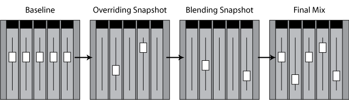
As such, a blending snapshot is useful for doing relative volume changes. For example, you might setup overriding snapshots for each level in your game, then use a blending snapshot to apply a -2dB relative change to the ambience bus when an explosion occurs.
Priority
When multiple snapshots are active, they are evaluated in the order defined by a snapshot's priority. This is determined by the ordering in the snapshots browser.
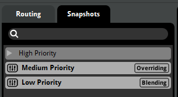
For example, if a high priority and low priority snapshot are both activated, the low priority snapshot's values are applied first (stomping out values from the baseline mix), then the high priority snapshot's values are again applied on top of that (stomping out values from the low priority snapshot mix). When there is no overlap, all properties are applied with no interference.
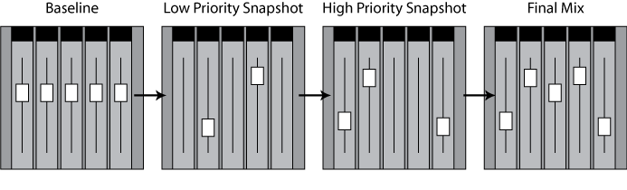
This is where modifying a snapshot's scope can be useful. Because the priority of combining snapshots is ordered, you can scope in or out elements within a given snapshot. This means that the snapshot will not apply changes to that particular property. For example, you may want the PauseMenu snapshot to lower the music volume, but maintain the volume changes to ambience that are currently active.
Snapshots in the same group are considered to be of equal priority, and are averaged together to get the net values that they should apply to the mix.
Grouping
Snapshot groups provide you with a way to specify that certain snapshots are of equal priority.
To create a snapshot group, right click on an empty space in the snapshots browser and select "New Group".
When multiple snapshots from the same group are enabled, their effects will be averaged together, before being applied as if they were part of a single snapshot. This can be used in various situations where no prioritization should occur. For example, you may want to create a group for snapshots that change reverb settings, based on proximity to trigger regions in a level. Using a group, along with AHDSR modulator on the intensity (see below), would allow for a smooth transition between the reverb states.
Groups also provide a way in which you can organize mutually exclusive snapshots. For example, you may want to group all cutscene snapshots, even if you're only planning to have one cutscene active at any given moment.
8.8.3 Snapshot Intensity
A snapshot's intensity is the "mix" between the property values specified in a snapshot and those that would be in place were the snapshot not active.
The intensity of a snapshot is visible in the deck when selecting a snapshot trigger region in the event editor.
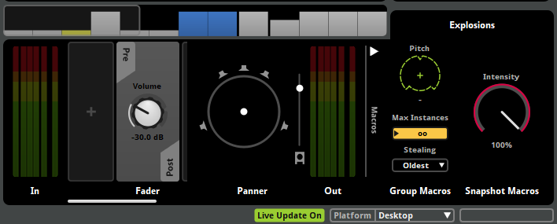
The above screenshot shows the snapshot's intensity dial located on the right hand side of the deck.
As the intensity property is increased, the more the properties' values are blended to those of the snapshot. So an intensity value of 0% results in none of the snapshot being applied, where as a value of 50% is an equal mix of both the current values and the snapshot values. It can be thought of as a wet/dry mix dial.
The snapshot intensity property multiplies with the intensity applied by snapshot trigger regions when the snapshot is applied.
When a snapshot is triggered, the intensity will immediately be applied. If you wish the snapshot to smoothly fade in and out when triggering and untriggering, it is recommended to apply an AHDSR modulator to the intensity property located on the right hand side of the deck.
When multiple instances of the same snapshot are simultaneously active, their intensities are averaged to determine the intensity with which the snapshot is applied to the mix.
8.8.4 The Tracks View
A snapshot can be displayed in either the strips view or the tracks view.
The tracks view for snapshots includes a parameter sheet for the snapshot's timeline, can also have parameter sheets for the snapshot's game parameters, and supports the creation of automation tracks and their relevant functionality.
Using the timeline and game parameters is optional but they can both extend the functionality of a snapshot significantly.
Snapshots behave almost identically to events. When triggered the timeline will move from the beginning and follow any logic markers, loop regions, and transition markers placed. Parameters, automation, and modulation can be added to snapshots in the same manner as to events. The only difference is that no assets can be placed onto a snapshot's timeline.
Only effects properties that have been scoped in for the snapshot in question can have automation or modulation applied.
It is also possible to automate and modulate the snapshot intensity. If an AHDSR modulator is applied to the snapshot's intensity, this will assist in smoothly fading the snapshot in and out when started and stopped.
8.9 Channel Formats
A channel is a single pathway for a mono audio signal. The subchannels of an audio file or effect can potentially use these channels. A specific number of channels and assumed speaker configuration is known as a channel format.
It is important to be careful with choosing channel formats to optimize performance for the hardware you are deploying your game to. The more channels being used, the more processing power is required from the hardware. For example, this can be crucial when running FMOD on low end hardware such as mobile devices or handheld consoles which won't require surround sound features.
FMOD Studio allows you to build your project towards the following speaker configurations:
| Speaker Configuration | Description |
|---|---|
| Mono | One speaker (no panning is be applied to this signal, panning can occur later) |
| Stereo | Two speakers |
| Surround 4.0 | Four speakers |
| Surround 5.0 | Five speakers |
| Surround 5.1 | Five speakers and one Low Frequency Effects (LFE) |
| Surround 7.1 | Seven speakers and one LFE |
| Surround 7.1.4 | Seven speakers, one LFE, and four speakers on the ceiling |
The channel format specified in the build tab of the preferences window is the one used by spatializers. Not all assets, buses, or tracks need to use this format. This is to support 2D music and non-diegetic sound effects alongside 3D sound.
The channel format chosen for your game may or may not match the speaker configuration that the user is using. In these circumstances, the low-level API detects the output capabilities of the hardware it is running on and automatically up mix or down mix to match that configuration. This way, if you set your FMOD Studio project to be 5.1 Surround but the player only has stereo speakers, FMOD automatically maps the outputs to the two available speakers.
To the left and right ends of the deck are the input and output of the given track or bus, labeled as "In" and "Out". These give you a visual representation of all speakers being used in that track.
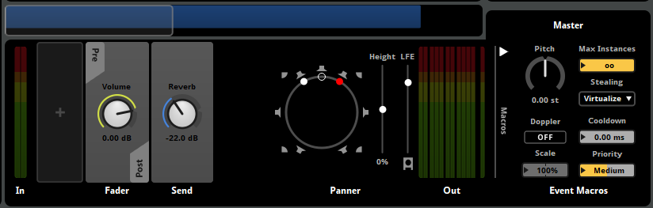
By default the channel format for a track is automatically dictated by the assets, instruments, or effects used.
When you place a spatializer effect into the deck, this automatically sets the channel format to your build settings' surround sound format at that point in the signal chain.
8.9.1 Changing Channel Formats
It is also possible to force the channel format of individual tracks and buses by right clicking on the In or Out meters. You are able to choose any of the aforementioned configurations as well as "Automatic" (which chooses a format based on the instruments/assets/effects on that track or bus), or "Platform" (which sets the channel format to match the builds section of the preferences window for the selected platform).
You can also change the channel format of the master bus in the mixer, which otherwise uses the platform's channel format specified in the surround speaker mode option in the preferences window.
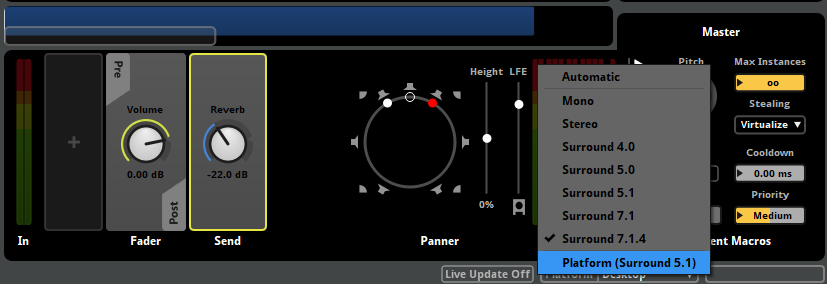
The channel format of a bus or track set to use the "Automatic" format depends on the formats of the instruments and tracks or buses routed into it. Choosing "Platform" will force the channel format to match the platform's channel format specified in the surround speaker mode option in preferences window, otherwise "Automatic" chooses the format with the most channels.
Also note for the panner, if the output format is "Automatic", FMOD Studio uses the stereo pan mode if the effective output format is stereo. If the output format is "Platform", FMOD Studio uses the surround pan mode.
The FMOD low-level API has even more customizable features, such as per-channel effects and custom mapping of input channels to output speakers. For more information, see our FMOD::Channel API documentation.
8.9.2 Metering Channel Order
The metering for the input and output of a track or bus shows you the volume going in and out of each individual channel.
In the preferences window you are able to change the order in which the meters appear in the deck. Changing the settings here only alters how the metering is displayed in the FMOD Studio tool and does not affect the project or any audio being produced or built.
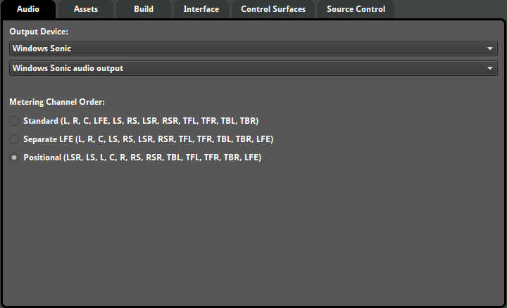
You can see below a list of what each acronym means:
| Interface Element | Speaker |
|---|---|
| L | Left |
| R | Right |
| C | Center |
| LFE | Low Frequency Effects (subwoofer) |
| LS | Left Surround |
| RS | Right Surround |
| LSR | Left Surround Rear |
| RSR | Right Surround Rear |
| TFL | Top Front Left |
| TFR | Top Front Right |
| TBL | Top Back Left |
| TBR | Top Back Right |
8.10 The Panner
If a track or bus is set to stereo or a higher speaker configuration, to the right end of the deck of each track or bus is the panner.
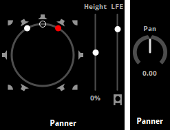
You are able to pan the output of that track between the available speakers. Stereo can only pan between left (L) and right (R) using a dial. Surround 4.0 and a higher speaker configuration will display a surround panner where you move a dot. Moving this dot allows panning between all the available speakers.
There are two surround panner modes for when the input channel format is stereo. In "Stereo In: Distributed" mode the surround panner behaves as if the output channel format is surround 4.0 or higher. In "Stereo In: L/R" mode, the white dot represents the left speaker and the red dot represents the right speaker. Moving the empty circle pans the sound, and moving the red or white dots adjusts the stereo width (how far apart the Left and Right speakers are). To switch between these two modes, right click on the panner and select your choice from the context menu.
You are able to further customize the output of the track or bus by disabling individual speakers on a surround panner. Clicking on a white speaker on the surround panner will disable it and turn the icon grey. These settings will be built into the banks so be careful if you are disabling speakers when auditioning.
When using 5.1, 7.1, or 7.1.4 the settings of the LFE and height (when using 7.1.4) to the right of the panner. The LFE controls the volume being sent to the LFE (subwoofer), whereas the height controls the perceived "height" of the 4 ceiling speakers. You are able to disable the LFE by clicking on the white icon below the slider. Height is set between -100% and +100%. If the player is using headphones (for example, with Windows Sonic for Headphones or Dolby Atmos for Headphones) they will hear an approximation of ceiling speakers.
The 4 "height" channels are represented as the four corner speakers on the surround panner.